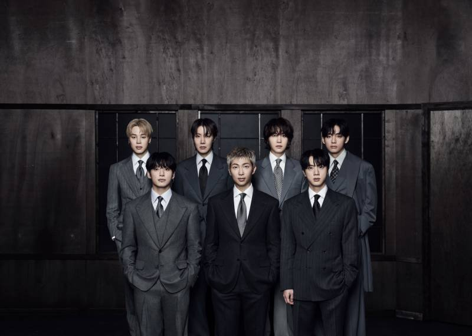
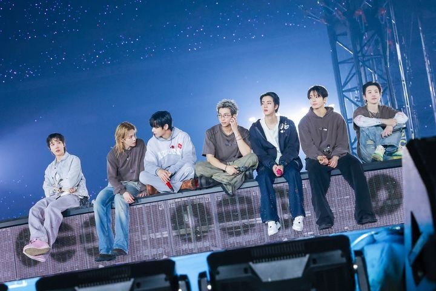
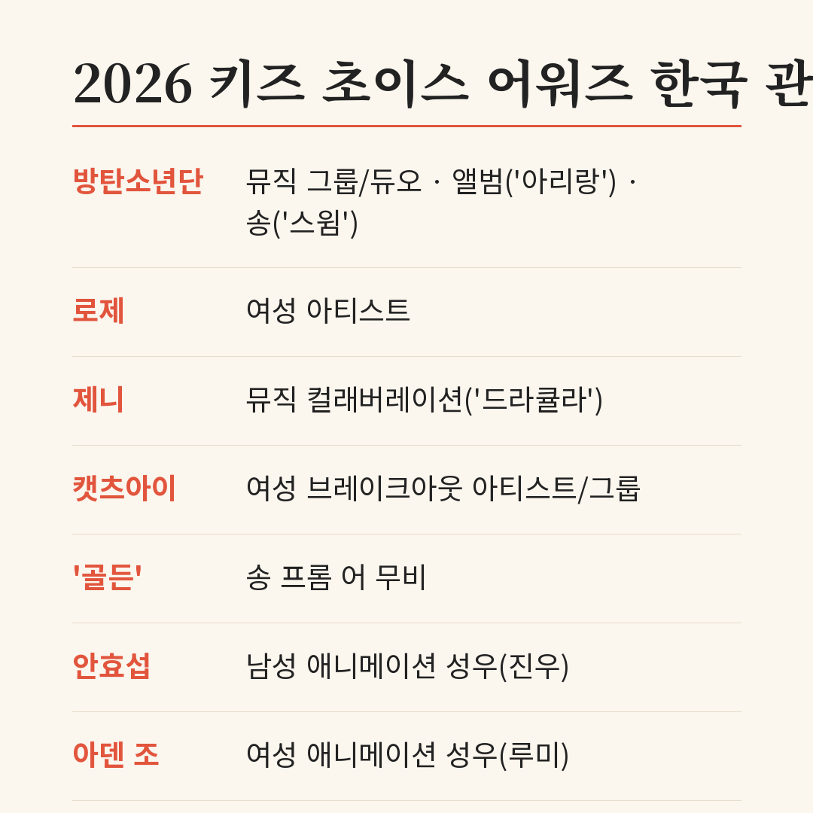

방탄소년단부터 애니메이션 영화의 목소리 연기까지, 한국과 이어진 트로피가 9개 나왔어요. 니켈로디언이 여는 '2026 키즈 초이스 어워즈' 수상 결과가 현지시간 11월 14일 발표됐어요. 누가 어떤 부문에서 받았는지 가수와 영화 두 갈래로 나눠 봤어요.
📷 사진 1 자리
▲ 방탄소년단 · 사진=빅히트 뮤직 제공
BTS, 후보에 오른 3개 부문을 모두 가져갔다
방탄소년단은 '페이보릿 뮤직 그룹/듀오', '페이보릿 앨범', '페이보릿 송' 세 부문 후보였고 셋 다 받았어요. 앨범상은 정규 앨범 '아리랑', 노래상은 타이틀곡 '스윔(SWIM)'이에요.
▶ 영상 1 자리
눈여겨볼 건 그룹 부문 기록이에요. 방탄소년단은 2020년부터 2023년까지 4년 연속 이 상을 받았고 올해까지 더해 통산 5번째가 됐어요. 이 부문 최다 수상 기록을 스스로 다시 늘린 셈이에요.
같은 주말 국내에서도 상이 이어졌어요. 하루 뒤인 15일 끝난 'MMA 2026(멜론뮤직어워드)'에서 방탄소년단은 '올해의 아티스트'와 '올해의 앨범'을 포함해 6관왕에 올랐어요. 두 시상식 모두 앨범상은 '아리랑'이었어요.
📷 사진 2 자리
▲ 공연 무대 위의 방탄소년단 · 사진=빅히트 뮤직 제공
블랙핑크 멤버와 캣츠아이도 이름을 올렸다
로제는 '페이보릿 여성 아티스트' 부문에서 수상했어요. 제니는 호주 밴드 테임 임팔라와 함께한 '드라큘라(Dracula)'로 '페이보릿 뮤직 컬래버레이션'을 받았어요.
하이브와 게펜 레코드가 함께 만든 걸그룹 캣츠아이(KATSEYE)는 '페이보릿 여성 브레이크아웃 아티스트/그룹'에 뽑혔어요.
▶ 영상 2 자리
'케이팝 데몬 헌터스'는 3개, 안효섭은 성우상
넷플릭스 애니메이션 영화 '케이팝 데몬 헌터스'는 트로피 3개를 받았어요. 삽입곡 '골든(Golden)'이 '페이보릿 송 프롬 어 무비'를 받았고 목소리 연기 부문 두 개도 이 영화가 가져갔어요.
안효섭은 극 중 사자 보이즈의 리더 진우의 영어 목소리로 영화 부문 남성 애니메이션 성우상을 받았어요. 루미 역의 한국계 미국인 배우 아덴 조는 여성 애니메이션 성우상을 받았어요.
한눈에 보는 한국 관련 수상 9개
가수·그룹 쪽은 방탄소년단 3개, 로제·제니 각 1개, 캣츠아이 1개로 6개예요. 영화 쪽은 '케이팝 데몬 헌터스'의 노래상과 성우상 2개를 합쳐 3개예요.
📷 사진 3 자리
수상이 음악에만 몰리지 않았다는 점이 이번 결과의 핵심이에요. K팝 그룹이 아닌 애니메이션 영화와 배우의 목소리 연기까지 상을 받았으니, '케이팝 데몬 헌터스'를 아직 안 봤다면 안효섭과 아덴 조의 목소리 연기를 중심으로 보는 것도 방법이에요.
키즈 초이스 어워즈 2026에서 한국 관련 수상은 방탄소년단 3관왕을 포함해 모두 9개였어요. '케이팝 데몬 헌터스'는 넷플릭스에서 볼 수 있어요.


